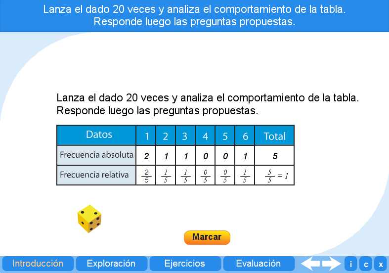
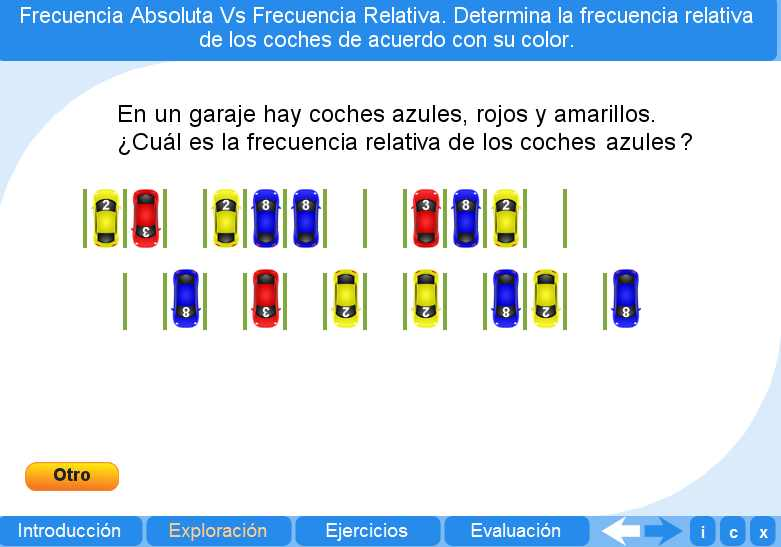
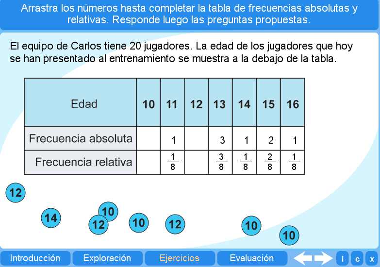
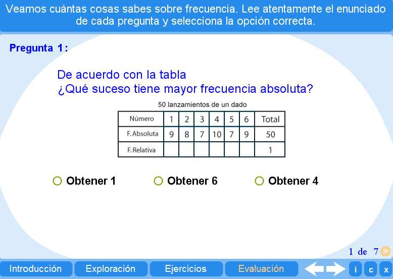

Objetivo
Ofrecer actividades que permitan al alumno identificar los diferentes tipos de triángulos.
Instrucciones generales
Se puede navegar entre los apartados con el menú de la parte inferior. Este menú aparece a lo largo de todo el interactivo y conserva su funcionalidad.
También se puede navegar por las escenas por medio de las flechas de navegación que aparecen en el lado inferior derecho del objeto de aprendizaje. Dentro de los apartados Exploración y Ejercicios es necesario utilizar estas flechas para acceder a las escenas sucesivas de dichos apartados.

En la parte inferior derecha del objeto de aprendizaje interactivo se encuentran los siguientes botones:
| Muestra la documentación del objeto de aprendizaje. | |
| Despliega los créditos correspondientes. | |
| Cierra la aplicación. |
Contenidos
Introducción
Permite un acercamiento al concepto de frecuencia a través de los resultados obtenidos con el lanzamiento de dados.

Exploración 1
Ofrece al alumno la oportunidad de calcular la frecuencia relativa..

Ejercicio
El alumno puede practicar con frecuencias en un ejercicio de arrastre de fichas..

Evaluación
El alumno debe resolver los siete problemas planteados, aplicando los conceptos aprendidos en los apartados anteriores.

| Los materiales aquí presentados utilizan el applet Descartes Web 2.0. | |

|
Los contenidos de esta unidad didáctica están bajo una licencia de Creative Commons. |